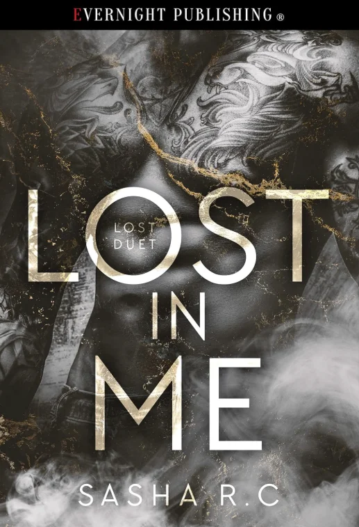
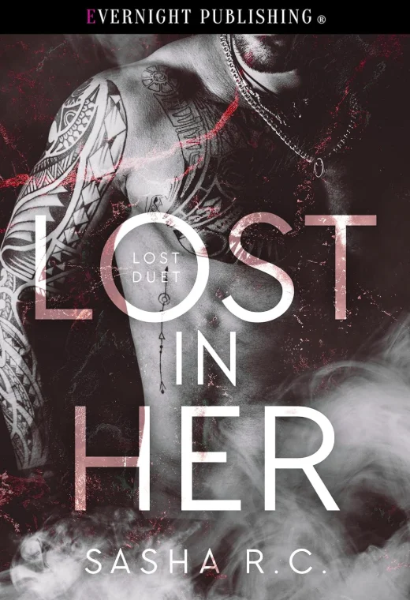

Sasha R.C.
Featured Books

Lost in Me is a gripping dark romance novel showcasing Sasha R.C.'s talent for emotional storytelling and compelling characters. Perfect for readers who enjoy modern indie romance with depth and tension.
Buy on Amazon
Lost in Her continues Sasha R.C.'s dark romance storytelling with intense emotion and memorable characters. A must-read for fans of contemporary indie romance.
Buy on Amazon